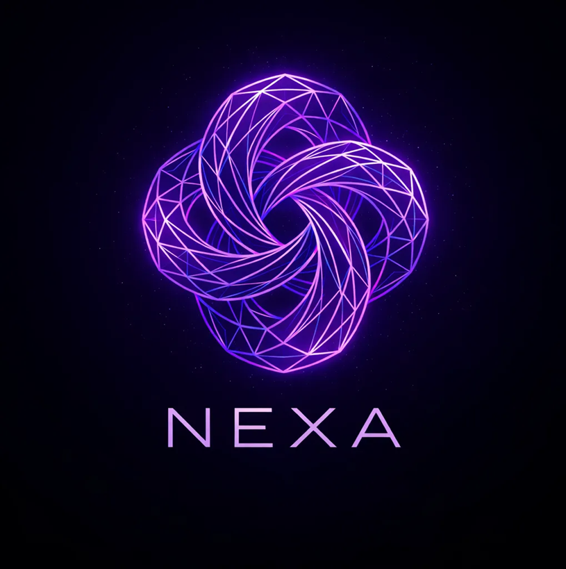

NEXA vem de nexus — o latim para vínculo.
Nexus é o particípio do verbo nectere — atar, ligar, conectar. Em latim clássico designa o laço que une duas coisas: pessoas em contrato, ideias em raciocínio, partes em um corpo. "Nexo", em português, vem dessa mesma raiz. "Conexão" é literalmente com + nexus — vínculo compartilhado.
O mercado escolheu nomes de velocidade (Bet, Sport, Win, Pay) — verbos de ação isolada. NEXA escolhe um nome de vínculo. O produto carrega a tese no próprio nome: não somos onde se aposta — somos onde se conecta.

Audiência universal
Tipo · explicativo canônico
Distribuição · interna + parceiros
de distribuição da
economia esportiva
brasileira.
O membro mora aqui
Não alugamos atenção do Meta, do Google, do TikTok. O membro abre o app diretamente, todo dia, pela comunidade. Distribuição não custa CPC.
Tudo passa por aqui
Aposta na casa parceira, conteúdo de creator, pick de tipster, live de jogo, marketplace, Coin no ecossistema — seis fluxos atravessando a mesma identidade.
O mercado inteiro
Brasileiro torcedor gasta R$ 100–120 bi/ano em apostas, R$ 200–400 M em fantasy, mais conteúdo e merchandise. NEXA quer ser a infraestrutura por onde esse fluxo passa.
Para entender o que NEXA é, comece pelo que NEXA não é.
Cada linha descarta uma categoria existente e desloca o eixo. O que sobra ao final não é "Cartola com aposta" nem "Bet365 com social" — é categoria nova herdando só fragmentos das anteriores.
Cada camada é, isoladamente, um produto. Junto, é o moat.
Cartola é a Camada I. Twitter é a II. Twitch é a IV. Hotmart é a V. Quando todas convivem na mesma identidade, o resultado não é a soma — é um produto novo de categoria diferente.
Fantasy
DFS daily e season-long sob Art. 49. Entry fees R$ 5–500, prêmios em dinheiro. O motivo de entrar.
Social
Feed com tipsters, copy-bet, ranking público, clãs de 10–50, lives ao vivo. O motivo de ficar.
Creator
Marketplace de picks, cursos, lives, NFT. Fee 10–20%. Tipster monetiza, NEXA captura take rate.
Aposta
Cross-sell via deep-link para operadora parceira. NEXA captura CPA + RevShare lifetime, não opera bookmaker.
Coin
Utility interna primeiro, on-chain via PSAV depois. Liga marketplace, missions, status — sem promessa de valorização.
Identidade
XP, badge, clã, ranking, histórico público, DNA do apostador. O moat — o que torna sair caro.
O torcedor brasileiro vive a vida esportiva em sete apps.
Para acompanhar um único jogo, abre Cartola pra montar o time, X / Twitter pra ler análise, Telegram pro grupo dos amigos, Twitch pra ver narração, Bet365 / Betano pra apostar, Pix pra mover dinheiro, e ainda paga via DM um tipster individual.
Sete contas. Sete identidades fragmentadas. Zero memória entre elas. Cada app captura uma fatia do tempo, mas ninguém é dono da experiência inteira. NEXA captura a economia escondida nessas costuras.
Sete logins, sete identidades, sete carteiras — substituídos por uma.
NEXA · seis camadas, mesma conta
O torcedor abre um único app que faz tudo o que sete apps faziam, com memória cruzada entre as camadas. O pick que ele leu vira aposta na casa parceira. A aposta gera XP, que sobe o nível, que dá acesso ao clã, que o conecta com o tipster, que abre live, que vende curso. Fricção entre apps vira recurso dentro de um.
- Identidade unificada · um KYC · uma carteira
- Memória cruzada entre camadas
- Take rate composto em 6 fluxos
- Churn estrutural reduzido
Um loop precisa que você perca. O outro precisa que você volte.
O loop da extração
O loop do pertencimento
A operadora tradicional aluga o usuário. NEXA é dona dele.
Toda casa BR hoje paga Meta, Google e creator pra cada usuário que abre conta. CAC sobe sempre — 188 operadoras competem pelo mesmo leilão. NEXA inverte: o usuário vem por outra razão (comunidade, fantasy) e a aposta acontece dentro de uma relação já estabelecida.
O fluxo da casa tradicional
por clique
multiplier
incentivo
R$ 80–150
extrativo
O fluxo do broker social
orgânico
viral
composta
receita
R$ 25–35
Três mecanismos. Cada um isola uma fricção do funil tradicional.
R$ 25–35
Creator outreach focado
10 streamers gamer-esports (não Casimiro mass-market) trazem público pré-qualificado por afinidade. 1 mid-anchor R$ 40–60 k, 4 nicho R$ 15–25 k, 5 micro-tipsters R$ 3–8 k. CPL fica 3–5× abaixo do leilão Meta porque o tráfego não compete em leilão aberto.
Viral coefficient via clã
Clã de 10–50 membros incentiva convites diretos via missão "convide 1 amigo que faça KYC = +200 XP". Cada membro ativo traz em média 0,6–0,9 outro nos primeiros 90 dias. K-factor reduz CAC pago em 30–40% no ano 1.
Social proof orgânico
Ranking público de tipsters com win rate auditável, marketplace com 50 featured, lives diárias e battle pass sazonal viralizam fora do app via screenshot. SEO ganha cauda longa de nome de tipster + esporte + cidade.
Cada giro aumenta a velocidade do próximo.
Um flywheel real é assimétrico — empurrar de novo custa menos a cada giro. Nas seis primeiras semanas o motor é manual. A partir do mês 6, a inércia interna sustenta sem capital externo proporcional.
Mais membros
via creator outreach + clã viral + SEO orgânico
Mais creators
tipsters/streamers vêm porque há audiência pagante
Mais conteúdo
picks, cursos, lives, análises diárias enchem feed
Mais cross-sell
membros qualificados convertem em FTD nas casas
Mais receita
reinvestida em produto e creator deals — volta a (1)
Um membro engajado, decomposto em receita atribuída.
Operadora típica enxerga o usuário como uma função única: deposita, aposta, perde, sai. NEXA mede o mesmo membro em seis dimensões simultâneas. Não é o usuário que paga mais — é a infraestrutura que captura mais do mesmo gasto.
ARPU mensal blended
R$ 40
Soma do que uma pessoa real deixa atrás em todas as camadas. Não projeção — decomposição.
Modelo só funciona se todos ganham. Por design.
O membro
Ganha um lugar onde existe como torcedor inteiro — sem dark UX, com reality check, retenção saudável, chance de virar criador / tipster monetizado.
O creator / tipster
Ganha audiência pré-engajada (não precisa construir do zero no Telegram), ferramentas de monetização, split favorável 90 / 10 com NEXA.
A operadora parceira
Ganha tráfego qualificado com KYC validado e afinidade fantasy — LTV 1,5–2× sportsbook puro a CAC sub-R$ 50. Substitui Meta/Google sem trade-off.
A holding família
Ganha vertical de identidade esportiva integrada às casas, opcionalidade cripto, opção exit como vendedor de plataforma em vez de comprador de outorga.
NEXA é o canal próprio de distribuição
da economia esportiva brasileira.
Tudo o que ela faz serve essa frase.
Reduz CAC porque não aluga atenção. Aumenta LTV porque captura seis fluxos do mesmo membro. Retém porque a identidade pública torna sair caro. Consolida porque substitui sete apps por uma conta. E o que busca ser é o que ainda não existe — infraestrutura da identidade esportiva, do mesmo jeito que WhatsApp virou infraestrutura da conversa.
guilherme15072006@gmail.com
Documento canônico v2 · 21·05·2026
Aberto para circular · interna + parceiros